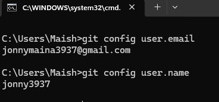
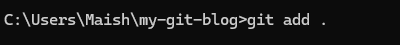

To create a working environment ; create a new folder to where you want your project to be located. set up your folder, create an index.html file, also prepare a folder for images or screen shots.
Make sure to:
Git is a version control system. That means it helps you track changes made to files over time. You can go back to previous versions, see who changed what, and collaborate with others without overwriting each other's work. Git works locally on your machine and can also be linked to remote servers like GitHub, making it powerful and flexible.
Other version control systems include:
A version control system allows you to:
Before using Git, ensure it is installed on your system. Here’s how to get started:
After installation:
Now that Git is installed, it's time to configure basic information. We don't need to 'register an account' to use Git, however, we need to tell Git who we are. We do this by providing our username and email address.
To check your current configuration:
To start using Git on a project, you first need to initialize a Git repository. This is done by opening a terminal or command prompt, navigating into your project folder using the cd command, and then typing git init. This command sets up Git to start tracking your work.
After initializing a Git repository using git init, the next important step is to add your project files to the staging area. The staging area is like a preparation zone where files wait before being officially saved in a Git snapshot (called a commit). Think of it as packing items into a bag before sealing it—the staging area is the bag, and committing is sealing it.
To add a file to the staging area, the command used is: git add filename or git add . to stage all files.
After adding files to the staging area, the next step is to commit them. Committing in Git means saving a snapshot of your current project state. This helps you track changes and return to previous versions if needed.
To commit changes, use:
git commit -m "Your commit message here"A branch in Git is like a separate line of development. It allows you to work on features, fixes, or experiments without affecting the main project. This makes it easy to manage different parts of a project separately and merge them when ready.
To create a new branch and switch to it, use:
git checkout -b new-branch-nameTo list all branches, use:
git branchThe active branch will have an asterisk (*) next to it.
Switching an active branch in Git means changing from one branch to another in your repository. Each branch in Git represents a separate line of development, and switching between them allows you to work on different features or tasks without affecting other parts of your project. When you switch branches, Git updates your working directory to reflect the state of the files in the branch you are switching to. This allows you to make changes in one branch without affecting the files in another branch. To switch to another branch, use:
git checkout branch-nameMerging in Git is the process of taking the changes from one branch and integrating them into another. Usually, you merge a feature branch into the main branch (often called main or master) once the feature is complete and tested. Git tries to automatically combine the changes, and if it can't (due to conflicting edits), it will prompt you to resolve the conflicts manually. To merge a branch into your current branch, use:
git merge branch-nameAfter merging, you can delete a branch using:
git branch -d branch-nameNow that you understand the basics of Git, here are some next steps you can explore:
rebase,
stash, and tag.